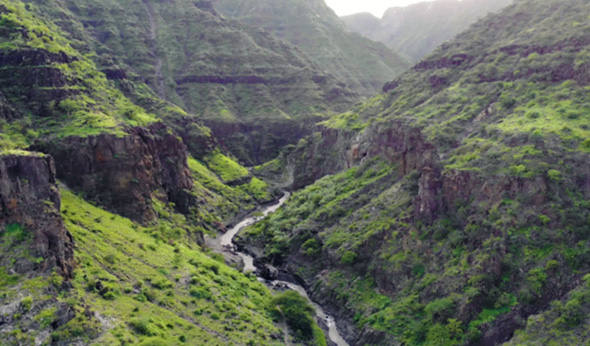

FOR ONLINE READING ONLY
Valleys
Valleys are areas of lower land which are found between two hills or mountains, as shown in Figure 6.

Some valleys have rivers flowing through them.Lakes may also form within valleys.For example, Tanzania has a major East African rift valley with several lakes.The lakes in this valley include Lake Natron in Arusha Region and Eyasi and Manyara in Manyara region.Others lakes in the east African rift valley are Lake Tanganyika in Kigoma, Katavi and Rukwa Regions.Lake Tanganyika is the deepest lake in Tanzania and Africa.There are also Lake Nyasa in Ruvuma, Njombe and Mbeya Regions.
GEOGRAPHY STD 3, FINAL DAMI (11-12-2023).indd 22
12/09/2025 13:24